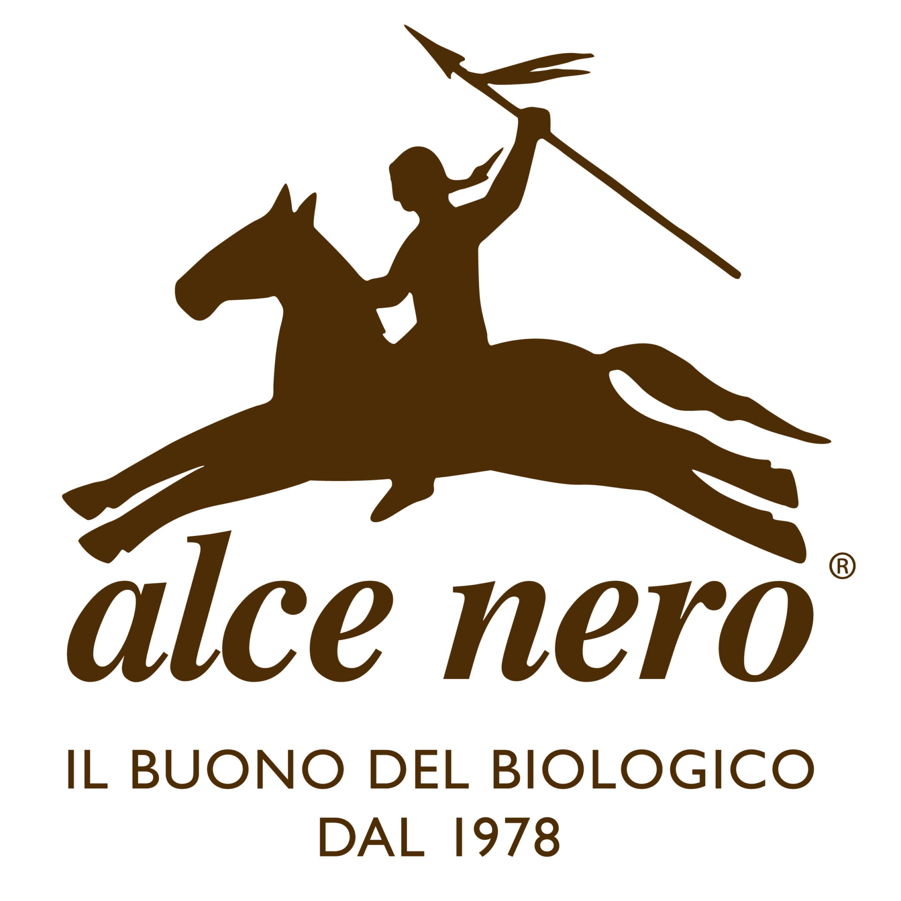

Alce Nero è un affermato marchio italiano, riconosciuto come leader nel settore della produzione e commercializzazione di alimenti biologici. Fondata nel 1978, l’azienda si configura come una rete integrata di agricoltori e trasformatori impegnati nella promozione e nello sviluppo dell’agricoltura biologica.
L’offerta di Alce Nero comprende un’ampia gamma di prodotti, tra cui pasta, passate di pomodoro, legumi, olio e miele, realizzati nel rispetto di elevati standard qualitativi e ambientali.
La coltivazione delle materie prime avviene prevalentemente in Italia, attraverso il coinvolgimento di oltre 1.000 agricoltori e la gestione di migliaia di ettari di terreni agricoli.Per alcune materie prime non coltivabili sul territorio nazionale, l’azienda si avvale inoltre della collaborazione con realtà agricole selezionate situate in Centro e Sud America, garantendo in ogni fase della filiera il rispetto dei principi del biologico e della sostenibilità.
Oltre al biologico puro, l'azienda promuove un'agricoltura che rigenera il suolo, con un focus sul rispetto delle materie prime.
Forte valorizzazione delle filiere corte e delle materie prime prevalentemente provenienti dai propri soci, garantendo la provenienza.
Il "buon cibo" biologico è inteso come cura di sé e dell'ambiente, con ricette essenziali (senza additivi o olio di palma) e un forte impegno per un'agricoltura equa e solidale.
L'obiettivo è andare oltre la sostenibilità, intervenendo su emissioni, risorse idriche e biodiversità per rigenerare il patrimonio naturale, anche grazie a progetti di economia circolare come BON.TÀ.
Implementazione degli standard di rendicontazione europei (GRI e ESRS) e allineamento agli Obiettivi di Sviluppo Sostenibile dell'Agenda 2030.
Impegno aziendale nel promuovere benessere, inclusione e formazione del personale con un approccio che valorizza le competenze e la parità di trattamento.

Per approfondire visita il sito ufficiale, oppure scopri come s'impegna il Gruppo Alce Nero nel campo della sostenibilità a tutela dell'ambiente.
Scarica i report di sostenibilità.